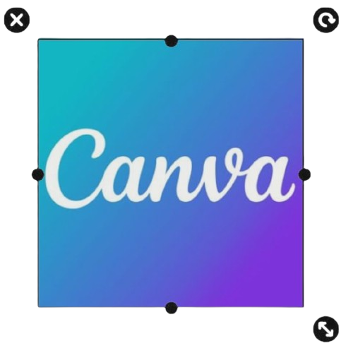
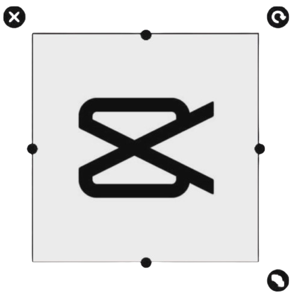
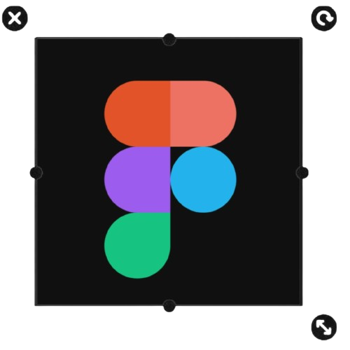

SKILLS
SOFTWARE USED
my go-to app when i’m forming phrases and
experimenting with different fonts
and text styles
experimenting with different fonts
and text styles
i use this for editing the basic videos i create.
it’s easy to use and perfect for adding effects,
transitions, and simple edits
it’s easy to use and perfect for adding effects,
transitions, and simple edits
this is the first app i used for editing photos.
i use it for simple edits, filters, and designs
i use it for simple edits, filters, and designs
I use Pinterest for inspo, ideas,
and saving aesthetic stuff I wanna recreate.
and saving aesthetic stuff I wanna recreate.
recently, i started using this to design websites,
both low-fidelity and high-fidelity.
i create layouts, wireframes, and UI designs here
both low-fidelity and high-fidelity.
i create layouts, wireframes, and UI designs here
i use this for quick and easy editing when i
need to make simple designs fast
need to make simple designs fast